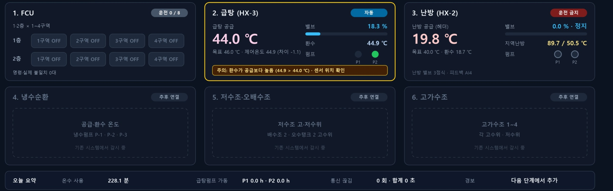

설비 자동제어 시스템 자체 구현
미래시설 TF는 기존 하니웰 설비 자동제어 시스템의 급탕·난방 기능을 자체 시스템으로 전환했습니다. 기존에는 운전 데이터를 확보하려면 설치 업체의 지원이 필요했고, AI 분석에 필요한 데이터를 수집하기 어려웠습니다.


- 에너지 · 운전 데이터 수집과 효율 개선 기반 마련
- 급탕·난방의 공급·환수 온도, 펌프 운전 상태와 밸브 개도를 확인하고 기록할 수 있도록 구현했습니다. 앞으로 냉방·난방·급탕 등 에너지 사용이 많은 설비의 운전 패턴을 AI로 분석해 운전 조건을 개선할 지점을 찾을 계획입니다.
- 소스코드를 활용한 유지보수
- 소스코드를 확보해 시스템 구성과 제어 로직을 내부에서 확인할 수 있게 됐습니다. 담당자는 AI의 도움으로 제어 동작을 파악하고, 유지보수에 필요한 수정 지점을 찾을 수 있습니다.
- 컨트롤러 구입비 50만 원 미만
- 컨트롤러를 구입하고 제어 프로그램과 운영 화면은 자체 제작했습니다.

